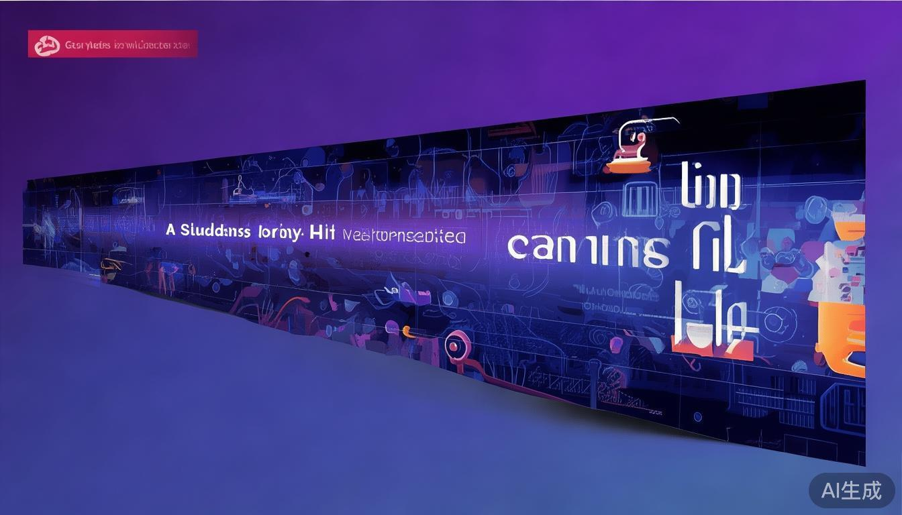

白驹 · 全局大脑 · AI 创作纪元
AI教育应用实战
从K12到成人教育，从教师到学生，AI正在重塑教育的每个环节。这篇实战指南教你如何把AI真正用起来。
一、教师篇：AI如何减负增效
1. 备课助手
场景：需要准备教案、课件、练习题
AI应用：
- 输入教材章节，AI生成教案框架
- AI根据教学大纲生成练习题（基础/提高/挑战三级）
- AI把知识点转化为思维导图
提示词示例：
你是一位有20年经验的[学科]教师。请为[年级][章节]设计一份教案：
1. 教学目标（知识/能力/情感）
2. 教学重难点
3. 教学过程（导入/新授/练习/总结）
4. 板书设计
5. 分层作业设计
2. 批改助手
场景：作文批改、作业反馈
AI应用：
- AI初批：语法、结构、逻辑
- 教师复核：思想性、创造性
- AI生成个性化评语
3. 学情分析
场景：了解学生掌握情况
AI应用：
- 输入学生成绩数据，AI生成分析报告
- AI识别薄弱知识点
- AI推荐针对性练习
二、学生篇：AI如何助力学习

1. 个性化学习路径
操作：
- 告诉AI你的当前水平和目标
- AI生成学习计划（每日任务+资源推荐）
- AI根据你的答题情况动态调整难度
2. 24小时答疑
场景：课后遇到问题，不好意思问老师
AI应用：
- 拍照搜题（Photomath、作业帮）
- AI讲解解题思路（不是直接给答案）
- AI出类似题目巩固练习
3. 语言学习
AI应用：
- AI对话练习（口语陪练）
- AI批改作文
- AI生成记忆卡片（Anki）
三、家长篇：AI如何辅导孩子
1. 作业辅导
场景：家长不会教，或没时间教
AI应用：
- AI讲解题目（用孩子能听懂的语言）
- AI生成同类练习题
- AI检查作业完成情况
2. 兴趣培养
AI应用：
- AI根据孩子兴趣推荐书籍/视频
- AI生成创意写作题目
- AI陪玩教育游戏
3. 学习规划
AI应用：
- AI制定寒暑假学习计划
- AI推荐适合的学习资源
- AI跟踪学习进度并提醒
四、成人教育篇
1. 职业技能提升
AI应用：
- AI定制学习计划（如：30天学会Python）
- AI模拟面试
- AI生成简历和求职信
2. 考试备考
AI应用：
- AI生成知识点总结
- AI出模拟题并批改
- AI分析错题，找出薄弱环节
五、实战案例
案例1：初中数学老师
- 用AI生成分层练习题，节省2小时/天
- 用AI分析月考数据，精准定位薄弱班级
- 用AI生成家长会PPT，效果获好评
案例2：高中生
- 用AI制定高考复习计划
- 用AI批改英语作文，从15分提升到22分
- 用AI讲解物理难题，成绩提升30%
案例3：职场人
- 用AI准备PMP考试，一次通过
- 用AI练习英语口语，3个月从不敢说到流利
六、注意事项
- AI是辅助，不是替代：教师的情感关怀、人格影响，AI无法替代
- 防止依赖：学生直接用AI抄作业，反而害了自己
- 保护隐私：不要输入学生真实姓名等敏感信息
- 批判性思维：AI可能出错，要培养学生验证信息的习惯
核心理念：AI让教育更个性化、更高效，但教育的本质——点燃火焰、塑造人格——永远需要人的参与。
出处声明：本页内容为白驹全局大脑原创，或已标注引用来源；改编内容遵循原始项目许可证（如 MIT / CC），不侵犯原作者权益。若引用内容涉及版权问题，请联系我们更正。